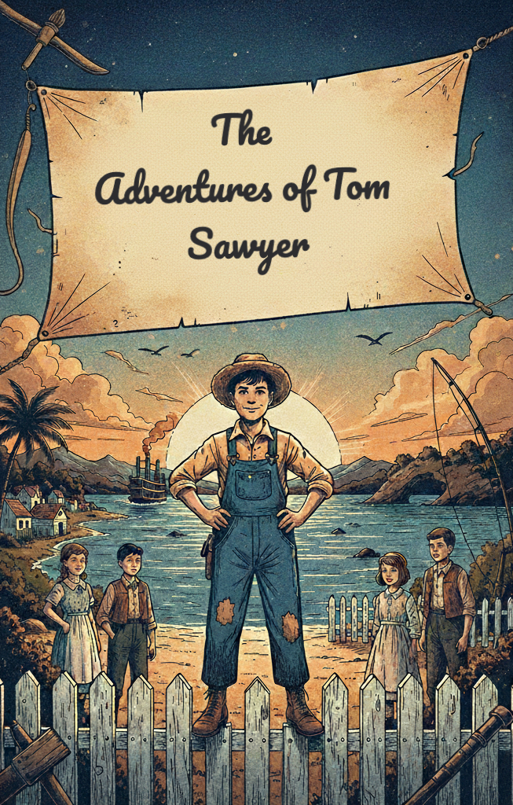

The Adventures of Tom Sawyer
Tom Sawyer lives a life defined by clever mischief and an aversion to the constraints of school and chores. His adventures begin famously with the clever manipulation of his friends into whitewashing a fence for him, turning a punishment into a profitable social event. Tom's journey from a rebellious troublemaker to a local hero highlights the transition from the innocence of boyhood to the complex responsibilities of the adult world.
Php 300.00